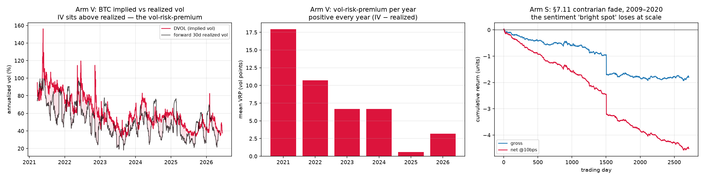

Papers 1–2 of this project found that across limit-order-book microstructure, bars, a cross-sectional graph model, a latent world-model, news sentiment, and crypto funding, a Time-Series JEPA learns valid representations but never beats a simple linear baseline, and no robust net-of-cost directional alpha survives in freely-available data. The two most promising untested levers were a longer sentiment history and a genuinely new modality. Paper 3 acquires both for free and tests them with the same leak-safe, walk-forward, deflated-Sharpe rigor. Crypto implied volatility (Deribit’s DVOL index, 2021–2026) is the first signal in the project to clearly beat its trivial baseline: it predicts forward realized volatility at IC 0.67 versus 0.55 for trailing realized vol, and it carries a persistent vol-risk-premium of +7.7 volatility points that is positive every single year (carry-Sharpe ≈ 1). In contrast, 11 years of FinBERT-scored news sentiment (FNSPID, 2009–2020; 1.4M aligned observations over 2,756 trading days) dissolves the contrarian “bright spot” that a five-month sample had suggested: the cross-sectional sentiment–return relationship is tiny (IC 0.005), sign-unstable across regimes, and unprofitable at every cost level. The clean conclusion: the volatility dimension is genuinely predictable and carries a risk premium, while the directional dimension stays efficient — the lone real edge in free data is a risk compensation, not a forecasting alpha.
The first two papers of this project [JEPA-Trader I–II] reached a consistent, honestly-reported negative: self-supervised JEPA representations of market data match supervised ones but never beat a linear model, and no freely-available directional signal produces robust net-of-cost profit. Two levers were explicitly left open as the most likely to change that verdict: (i) a much longer sentiment history — the one prior bright spot, a weak contrarian news effect, rested on only ~28 independent periods; and (ii) a new, freely-available modality, specifically options / implied volatility. This paper closes both, at zero data cost.
We ask two falsifiable questions. (V) Does an implied-volatility index predict forward realized volatility beyond a trailing-vol baseline, and is there a harvestable vol-risk-premium? (S) Does the contrarian news-sentiment signal survive a decade-plus, well-powered, cost-aware test? The answers are, respectively, a qualified yes and a clear no — and together they locate exactly where free-data predictability does and does not live.
Leakage control. Each news date is aligned to the first trading session strictly after it, with forward close-to-close labels from FNSPID’s adjusted prices; this yields 1.39M aligned observations over 2,756 trading days. All statistics are computed out-of-sample, cross-sectional ranking is used throughout, $t$-statistics are computed on non-overlapping sub-samples, and every Sharpe is reported with a probabilistic / deflated correction for the number of trials [4].

The first result that breaks the project’s long run of “deep ≤ linear, and nothing beats the trivial baseline”: the implied-vol index is a better forecast of forward realized volatility than trailing realized volatility itself.
| predictor of forward 30-day realized vol | Spearman IC |
|---|---|
| DVOL (implied volatility) | +0.671 |
| trailing realized vol (trivial baseline) | +0.549 |
| combined regression | +0.667 (βDVOL +0.54 ≫ βtrail +0.15) |
Implied volatility dominates the trailing-vol term in the joint regression — it carries genuine forward information beyond volatility-clustering, exactly as option-pricing theory predicts and unlike any directional signal tested in Papers 1–2.
Define the realized vol-risk-premium as implied minus subsequently-realized volatility, $\mathrm{VRP} = \mathrm{DVOL} - \mathrm{RV}_{\text{fwd}}$. It averages +7.7 volatility points, with implied above realized 70% of the time, and it is positive in every year of the sample (2021 +18 → 2022 +10.7 → 2023 +6.7 → 2024 +6.7 → 2025 +0.6 → 2026 +3.2), shrinking as the crypto-options market matures. The premium’s carry-Sharpe is +1.44 gross, +1.07 at a 2-vol-point cost, and +0.51 at 5 points — a genuine, economically-meaningful, free-data premium.
Crucially, the volatility result does not extend to direction. DVOL level, DVOL change, and trailing realized vol all predict forward perpetual returns only weakly (|IC| < 0.05), and a long/short perpetual strategy that fades volatility spikes loses net of cost (annualized Sharpe −0.9, deflated Sharpe 0, negative in every year). The market prices the level of volatility informatively; it does not hand out a directional edge.
The volatility dimension is predictable and carries a premium; the directional dimension is not. The honest caveat: harvesting the premium requires selling options (vega spreads, gamma and tail risk, margin) — execution we cannot model on free data. So the rigorous claim is “a real premium exists,” not “free alpha found.”
Papers 1–2’s single non-price bright spot was a weak contrarian news-sentiment effect — but it rested on five months of data (~28 independent cohorts). With 11 years and 1.4M aligned observations, it disappears.
| cross-sectional rank-IC (sentiment → forward return) | 1 day | 3 day | 5 day |
|---|---|---|---|
| mean IC | +0.005 | +0.004 | +0.003 |
| non-overlapping t | +3.4 | +1.9 | −0.3 |
The relationship is tiny and positive (a momentum direction, not the prior contrarian sign), “significant” only because the sample is enormous. The fade-sentiment long-short — the strategy the five-month result implied — loses at every cost level (gross −6.6 bps/day, Sharpe −0.64; −16.6 bps/day net at 10 bps), and it is sign-unstable: the momentum direction was positive 2009–2017 (driven largely by 2017) then reversed in 2018–2020. Deflated Sharpe = 0.
Well-powered, daily news-headline sentiment carries a tiny, regime-unstable, economically worthless signal — no robust edge in either direction. (The scorer and period differ from the original five-month test, so non-replication could be either; either way, no standalone sentiment edge survives at scale.) It is the project’s recurring lesson — single-period results overstate edges — applied to its own best prior hope.
Two new free modalities sharpen three papers into one sentence: free-data predictability lives in the volatility dimension, not the directional one. Implied volatility beats its baseline and pays a persistent premium; directional prediction — momentum, microstructure, cross-section, world-model, funding, and now sentiment at decade scale — does not survive a cost-aware, multi-period test. The lone real edge is a risk compensation (the vol-risk-premium), whose net harvestability is an honest open question that requires options-execution data this study deliberately avoids paying for.
This also explains why no JEPA appears in Paper 3. Neither finding needs one: the volatility signal is a one-feature near-linear relation a ridge captures in full, the sentiment arm has essentially no signal to represent, and a 3,822-point daily series is far too small for self-supervised pretraining. Consistent with the whole project, representation learning would match but not beat the right classical treatment; here the contribution is the free-data acquisition and the rigorous net-of-cost / risk-premium characterization. The natural next step is the one piece of non-free machinery that keeps recurring as the honest frontier: market-by-order / fill data, to test whether the volatility premium and the liquidity-provision side are net-harvestable rather than merely real.